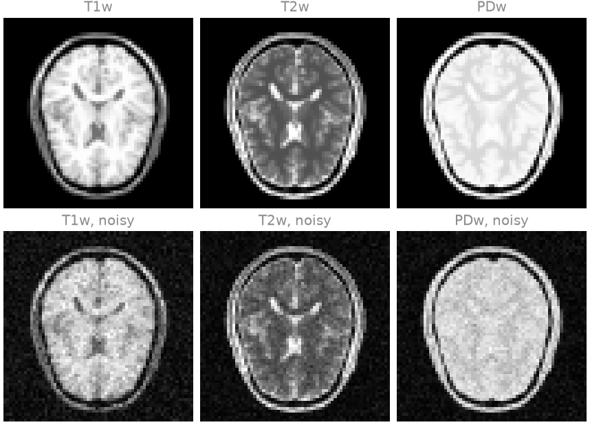
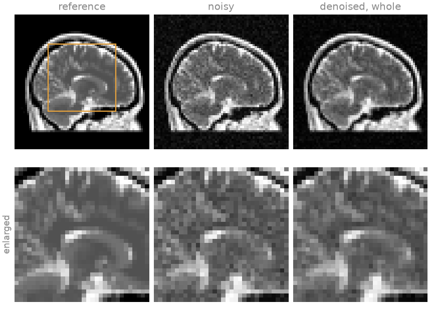
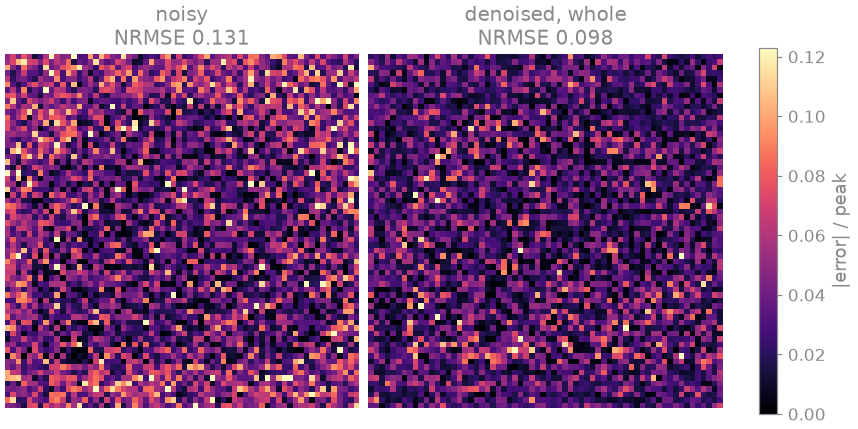
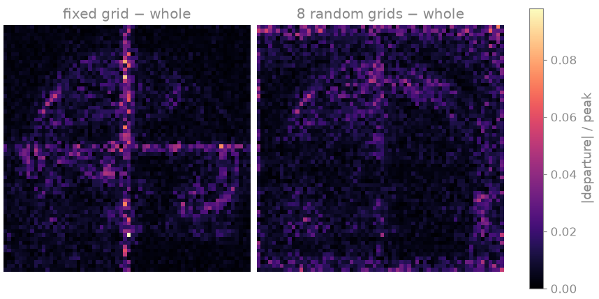

Note
Go to the end to download the full example code.
Networks for complex volumes#
Aim. Train a 3D convolutional denoiser on patches of a complex, multi-contrast brain volume, apply it to a whole volume of another subject patch by patch, as it would run on a scanner GPU too small for the volume, and check that the patch boundaries leave no visible seams.
The networks of Plug-and-play denoisers and MoDL, on BART’s ADMM denoise a single complex 2D slice. The data a learned reconstruction is most needed for are larger: a 3D volume of several contrasts, of subspace coefficients in MR fingerprinting, or of the frames of a cine. Three things change. The contrasts are denoised jointly, as channels of one image, so that the network can use the anatomy they share; their signal levels differ, so they are balanced before the network sees them. The volume does not fit the network’s activations in GPU memory, so the network is trained on patches and applied patch by patch. And a network applied on a fixed grid of patches leaves seams at the patch boundaries, which a random offset of the grid averages out.
Prerequisites. MoDL, on BART’s ADMM.
Learning objectives
Build a 3D
bartorch.learning.UNetfor complex multi-contrast images withbartorch.learning.ComplexNet, and balance the contrasts by whitening.Train it on patches drawn by
torchio, with augmentations that preserve the complex MR signal.Apply it to a whole volume with
bartorch.learning.Patchwise, and average the seams out withbartorch.learning.moments().Compare the size of spatial and spatiotemporal networks.
import csv
import logging
from pathlib import Path
import brainweb_dl
import lightning
import numpy as np
import torch
import torchio as tio
from brainweb_dl import get_mri
from torch.utils.data import DataLoader
from bartorch import learning
SIZE = 64
PATCH = 32
NOISE = 0.06
_ = torch.manual_seed(0)
A multi-contrast complex volume#
Three spin-echo contrasts of a BrainWeb subject – \(T_1\)-weighted
(TR 600 ms, TE 12 ms), \(T_2\)-weighted (TR 4000 ms, TE 100 ms) and
proton-density-weighted (TR 4000 ms, TE 12 ms) – on a \(64^3\) grid,
each with its own smooth background phase, as a (3, z, y, x) complex
tensor. Each voxel’s signal is the sum of the spin-echo signals of the
tissues it contains. Subject 0 is the training volume and subject 4 the test
volume. Complex Gaussian noise of 6 per cent of each contrast’s peak gives
the test volume an SNR typical of a fast high-resolution scan.
train_volume = brain_volume(subject=0)
test_volume = brain_volume(subject=4)
noisy = test_volume + NOISE * torch.randn_like(test_volume)
print(f"test volume {tuple(test_volume.shape)}, {test_volume.dtype}")

Downloading subject04_csf: 0.00B [00:00, ?B/s]
Downloading subject04_bck: 0.00B [00:00, ?B/s]
Downloading subject04_gry: 0.00B [00:00, ?B/s]
Downloading subject04_wht: 0.00B [00:00, ?B/s]
Downloading subject04_bck: 1.00kB [00:03, 259B/s]
Downloading subject04_bck: 40.8kB [00:04, 14.3kB/s]
Downloading subject04_bck: 128kB [00:04, 54.7kB/s]
Downloading subject04_bck: 240kB [00:04, 119kB/s]
Downloading subject04_wht: 1.00kB [00:04, 233B/s]
Downloading subject04_bck: 337kB [00:04, 178kB/s]
Downloading subject04_csf: 1.00kB [00:04, 221B/s]
Downloading subject04_wht: 40.8kB [00:04, 12.9kB/s]
Downloading subject04_csf: 40.8kB [00:04, 12.3kB/s]
Downloading subject04_wht: 152kB [00:04, 59.5kB/s]
Downloading subject04_bck: 433kB [00:04, 232kB/s]
Downloading subject04_csf: 161kB [00:04, 60.7kB/s]
Downloading subject04_bck: 486kB [00:04, 261kB/s]
Downloading subject04_wht: 296kB [00:04, 136kB/s]
Downloading subject04_csf: 289kB [00:05, 127kB/s]
Downloading subject04_bck: 537kB [00:04, 287kB/s]
Downloading subject04_wht: 561kB [00:04, 321kB/s]
Downloading subject04_gry: 1.00kB [00:05, 203B/s]
Downloading subject04_csf: 401kB [00:05, 200kB/s]
Downloading subject04_bck: 585kB [00:05, 318kB/s]
Downloading subject04_wht: 705kB [00:05, 424kB/s]
Downloading subject04_csf: 513kB [00:05, 284kB/s]
Downloading subject04_gry: 40.8kB [00:05, 11.3kB/s]
Downloading subject04_bck: 632kB [00:05, 343kB/s]
Downloading subject04_wht: 865kB [00:05, 566kB/s]
Downloading subject04_csf: 621kB [00:05, 379kB/s]
Downloading subject04_bck: 689kB [00:05, 393kB/s]
Downloading subject04_wht: 1.02MB [00:05, 732kB/s]
Downloading subject04_gry: 185kB [00:05, 65.1kB/s]
Downloading subject04_csf: 721kB [00:05, 458kB/s]
Downloading subject04_bck: 739kB [00:05, 414kB/s]
Downloading subject04_wht: 1.19MB [00:05, 905kB/s]
Downloading subject04_gry: 417kB [00:05, 181kB/s]
Downloading subject04_bck: 788kB [00:05, 434kB/s]
Downloading subject04_csf: 849kB [00:05, 587kB/s]
Downloading subject04_wht: 1.36MB [00:05, 1.06MB/s]
Downloading subject04_gry: 561kB [00:05, 266kB/s]
Downloading subject04_bck: 837kB [00:05, 443kB/s]
Downloading subject04_csf: 961kB [00:05, 688kB/s]
Downloading subject04_wht: 1.53MB [00:05, 1.20MB/s]
Downloading subject04_gry: 705kB [00:05, 371kB/s]
Downloading subject04_bck: 885kB [00:05, 452kB/s]
Downloading subject04_csf: 1.05MB [00:05, 775kB/s]
Downloading subject04_wht: 1.72MB [00:05, 1.35MB/s]
Downloading subject04_gry: 849kB [00:05, 491kB/s]
Downloading subject04_bck: 933kB [00:05, 456kB/s]
Downloading subject04_csf: 1.16MB [00:05, 844kB/s]
Downloading subject04_gry: 993kB [00:05, 625kB/s]
Downloading subject04_wht: 1.91MB [00:05, 1.48MB/s]
Downloading subject04_bck: 980kB [00:05, 458kB/s]
Downloading subject04_csf: 1.28MB [00:05, 937kB/s]
Downloading subject04_gry: 1.11MB [00:05, 761kB/s]
Downloading subject04_wht: 2.09MB [00:05, 1.59MB/s]
Downloading subject04_bck: 1.00MB [00:06, 456kB/s]
Downloading subject04_wht: 2.28MB [00:05, 1.69MB/s]
Downloading subject04_csf: 1.41MB [00:06, 1.00MB/s]
Downloading subject04_gry: 1.25MB [00:06, 882kB/s]
Downloading subject04_wht: 2.47MB [00:06, 1.74MB/s]
Downloading subject04_csf: 1.55MB [00:06, 1.11MB/s]
Downloading subject04_gry: 1.39MB [00:06, 992kB/s]
Downloading subject04_bck: 1.05MB [00:06, 347kB/s]
Downloading subject04_csf: 1.67MB [00:06, 1.16MB/s]
Downloading subject04_wht: 2.67MB [00:06, 1.80MB/s]
Downloading subject04_gry: 1.55MB [00:06, 1.13MB/s]
Downloading subject04_bck: 1.09MB [00:06, 374kB/s]
Downloading subject04_csf: 1.81MB [00:06, 1.21MB/s]
Downloading subject04_gry: 1.70MB [00:06, 1.24MB/s]
Downloading subject04_wht: 2.88MB [00:06, 1.86MB/s]
Downloading subject04_bck: 1.13MB [00:06, 375kB/s]
Downloading subject04_wht: 3.08MB [00:06, 1.91MB/s]
Downloading subject04_gry: 1.85MB [00:06, 1.26MB/s]
Downloading subject04_csf: 1.95MB [00:06, 1.24MB/s]
Downloading subject04_wht: 3.27MB [00:06, 1.92MB/s]
Downloading subject04_csf: 2.16MB [00:06, 1.51MB/s]
Downloading subject04_gry: 1.99MB [00:06, 1.29MB/s]
Downloading subject04_csf: 2.34MB [00:06, 1.60MB/s]
Downloading subject04_wht: 3.45MB [00:06, 1.88MB/s]
Downloading subject04_gry: 2.13MB [00:06, 1.33MB/s]
Downloading subject04_csf: 2.56MB [00:06, 1.79MB/s]
Downloading subject04_wht: 3.88MB [00:06, 2.60MB/s]
Downloading subject04_gry: 2.28MB [00:06, 1.39MB/s]
Downloading subject04_wht: 4.22MB [00:06, 2.82MB/s]
Downloading subject04_gry: 2.49MB [00:06, 1.57MB/s]
Downloading subject04_csf: 2.74MB [00:06, 1.68MB/s]
Downloading subject04_wht: 4.49MB [00:06, 2.76MB/s]
Downloading subject04_gry: 2.74MB [00:07, 1.83MB/s]
Downloading subject04_csf: 2.90MB [00:07, 1.63MB/s]
Downloading subject04_wht: 4.86MB [00:07, 3.07MB/s]
Downloading subject04_csf: 3.06MB [00:07, 1.61MB/s]
Downloading subject04_gry: 2.91MB [00:07, 1.66MB/s]
Downloading subject04_wht: 5.16MB [00:07, 3.04MB/s]
Downloading subject04_csf: 3.22MB [00:07, 1.57MB/s]
Downloading subject04_gry: 3.19MB [00:07, 1.97MB/s]
Downloading subject04_wht: 5.45MB [00:07, 3.00MB/s]
Downloading subject04_csf: 3.37MB [00:07, 1.51MB/s]
Downloading subject04_gry: 3.38MB [00:07, 1.96MB/s]
Downloading subject04_wht: 5.74MB [00:07, 2.96MB/s]
Downloading subject04_csf: 3.66MB [00:07, 1.92MB/s]
Downloading subject04_gry: 3.57MB [00:07, 1.86MB/s]
Downloading subject04_wht: 6.02MB [00:07, 2.70MB/s]
Downloading subject04_csf: 3.85MB [00:07, 1.78MB/s]
Downloading subject04_gry: 3.75MB [00:07, 1.77MB/s]
Downloading subject04_wht: 6.28MB [00:07, 2.65MB/s]
Downloading subject04_gry: 3.93MB [00:07, 1.77MB/s]
Downloading subject04_fat: 0.00B [00:00, ?B/s]
Downloading subject04_csf: 4.13MB [00:07, 2.00MB/s]
Downloading subject04_wht: 6.54MB [00:07, 2.65MB/s]
Downloading subject04_gry: 4.10MB [00:07, 1.68MB/s]
Downloading subject04_csf: 4.32MB [00:07, 1.88MB/s]
Downloading subject04_wht: 6.88MB [00:07, 2.89MB/s]
Downloading subject04_gry: 4.26MB [00:07, 1.65MB/s]
Downloading subject04_csf: 4.50MB [00:07, 1.85MB/s]
Downloading subject04_wht: 7.16MB [00:07, 2.83MB/s]
Downloading subject04_csf: 4.78MB [00:08, 2.07MB/s]
Downloading subject04_gry: 4.42MB [00:08, 1.51MB/s]
Downloading subject04_wht: 7.43MB [00:08, 2.33MB/s]
Downloading subject04_gry: 4.61MB [00:08, 1.63MB/s]
Downloading subject04_csf: 4.98MB [00:08, 1.81MB/s]
Downloading subject04_gry: 4.81MB [00:08, 1.74MB/s]
Downloading subject04_wht: 7.67MB [00:08, 2.01MB/s]
Downloading subject04_csf: 5.16MB [00:08, 1.69MB/s]
Downloading subject04_gry: 4.98MB [00:08, 1.61MB/s]
Downloading subject04_wht: 7.87MB [00:08, 1.94MB/s]
Downloading subject04_csf: 5.33MB [00:08, 1.64MB/s]
Downloading subject04_gry: 5.14MB [00:08, 1.50MB/s]
Downloading subject04_csf: 5.50MB [00:08, 1.66MB/s]
Downloading subject04_wht: 8.07MB [00:08, 1.87MB/s]
Downloading subject04_gry: 5.29MB [00:08, 1.43MB/s]
Downloading subject04_csf: 5.66MB [00:08, 1.67MB/s]
Downloading subject04_wht: 8.26MB [00:08, 1.84MB/s]
Downloading subject04_csf: 5.82MB [00:08, 1.66MB/s]
Downloading subject04_gry: 5.42MB [00:08, 1.40MB/s]
Downloading subject04_wht: 8.44MB [00:08, 1.84MB/s]
Downloading subject04_fat: 1.00kB [00:01, 889B/s]
Downloading subject04_gry: 5.56MB [00:08, 1.38MB/s]
Downloading subject04_csf: 5.98MB [00:08, 1.61MB/s]
Downloading subject04_wht: 8.62MB [00:08, 1.77MB/s]
Downloading subject04_gry: 5.69MB [00:08, 1.34MB/s]
Downloading subject04_csf: 6.14MB [00:09, 1.55MB/s]
Downloading subject04_fat: 40.8kB [00:01, 43.8kB/s]
Downloading subject04_wht: 8.80MB [00:08, 1.78MB/s]
Downloading subject04_gry: 5.83MB [00:09, 1.33MB/s]
Downloading subject04_wht: 8.99MB [00:09, 1.81MB/s]
Downloading subject04_csf: 6.29MB [00:09, 1.47MB/s]
Downloading subject04_fat: 177kB [00:01, 210kB/s]
Downloading subject04_gry: 5.96MB [00:09, 1.27MB/s]
Downloading subject04_csf: 6.43MB [00:09, 1.46MB/s]
Downloading subject04_wht: 9.16MB [00:09, 1.75MB/s]
Downloading subject04_fat: 425kB [00:01, 530kB/s]
Downloading subject04_gry: 6.11MB [00:09, 1.36MB/s]
Downloading subject04_csf: 6.57MB [00:09, 1.38MB/s]
Downloading subject04_wht: 9.33MB [00:09, 1.67MB/s]
Downloading subject04_fat: 545kB [00:01, 630kB/s]
Downloading subject04_gry: 6.30MB [00:09, 1.50MB/s]
Downloading subject04_csf: 6.70MB [00:09, 1.35MB/s]
Downloading subject04_wht: 9.52MB [00:09, 1.70MB/s]
Downloading subject04_fat: 689kB [00:01, 737kB/s]
Downloading subject04_gry: 6.44MB [00:09, 1.43MB/s]
Downloading subject04_wht: 9.70MB [00:09, 1.76MB/s]
Downloading subject04_csf: 6.83MB [00:09, 1.32MB/s]
Downloading subject04_gry: 6.58MB [00:09, 1.40MB/s]
Downloading subject04_fat: 793kB [00:01, 765kB/s]
Downloading subject04_wht: 9.91MB [00:09, 1.82MB/s]
Downloading subject04_csf: 6.97MB [00:09, 1.31MB/s]
Downloading subject04_gry: 6.72MB [00:09, 1.40MB/s]
Downloading subject04_wht: 10.1MB [00:09, 1.88MB/s]
Downloading subject04_csf: 7.10MB [00:09, 1.31MB/s]
Downloading subject04_fat: 890kB [00:02, 735kB/s]
Downloading subject04_gry: 6.85MB [00:09, 1.34MB/s]
Downloading subject04_csf: 7.22MB [00:09, 1.32MB/s]
Downloading subject04_wht: 10.3MB [00:09, 1.93MB/s]
Downloading subject04_csf: 7.35MB [00:10, 1.32MB/s]
Downloading subject04_gry: 6.98MB [00:09, 1.31MB/s]
Downloading subject04_wht: 10.5MB [00:09, 1.98MB/s]
Downloading subject04_fat: 977kB [00:02, 605kB/s]
Downloading subject04_wht: 10.7MB [00:10, 1.97MB/s]
Downloading subject04_gry: 7.11MB [00:10, 1.29MB/s]
Downloading subject04_csf: 7.49MB [00:10, 1.31MB/s]
Downloading subject04_fat: 1.03MB [00:02, 604kB/s]
Downloading subject04_csf: 7.63MB [00:10, 1.32MB/s]
Downloading subject04_gry: 7.23MB [00:10, 1.23MB/s]
Downloading subject04_csf: 7.77MB [00:10, 1.34MB/s]
Downloading subject04_fat: 1.13MB [00:02, 635kB/s]
Downloading subject04_gry: 7.35MB [00:10, 1.15MB/s]
Downloading subject04_csf: 7.91MB [00:10, 1.37MB/s]
Downloading subject04_gry: 7.46MB [00:10, 1.13MB/s]
Downloading subject04_fat: 1.20MB [00:02, 616kB/s]
Downloading subject04_csf: 8.08MB [00:10, 1.47MB/s]
Downloading subject04_gry: 7.58MB [00:10, 1.14MB/s]
Downloading subject04_fat: 1.30MB [00:02, 674kB/s]
Downloading subject04_csf: 8.31MB [00:10, 1.76MB/s]
Downloading subject04_gry: 7.77MB [00:10, 1.34MB/s]
Downloading subject04_fat: 1.38MB [00:02, 656kB/s]
Downloading subject04_csf: 8.48MB [00:10, 1.63MB/s]
Downloading subject04_gry: 8.03MB [00:10, 1.75MB/s]
Downloading subject04_csf: 8.70MB [00:10, 1.81MB/s]
Downloading subject04_fat: 1.45MB [00:03, 624kB/s]
Downloading subject04_gry: 8.20MB [00:10, 1.74MB/s]
Downloading subject04_gry: 8.47MB [00:10, 2.04MB/s]
Downloading subject04_csf: 8.88MB [00:11, 1.66MB/s]
Downloading subject04_fat: 1.52MB [00:03, 535kB/s]
Downloading subject04_gry: 8.67MB [00:11, 1.96MB/s]
Downloading subject04_csf: 9.04MB [00:11, 1.68MB/s]
Downloading subject04_gry: 8.91MB [00:11, 2.09MB/s]
Downloading subject04_gry: 9.17MB [00:11, 2.27MB/s]
Downloading subject04_csf: 9.20MB [00:11, 1.26MB/s]
Downloading subject04_gry: 9.39MB [00:11, 1.99MB/s]
Downloading subject04_gry: 9.81MB [00:11, 2.57MB/s]
Downloading subject04_mus: 0.00B [00:00, ?B/s]
Downloading subject04_gry: 10.2MB [00:11, 2.81MB/s]
Downloading subject04_gry: 10.4MB [00:11, 2.80MB/s]
Downloading subject04_gry: 10.7MB [00:11, 2.83MB/s]
Downloading subject04_gry: 11.0MB [00:11, 2.82MB/s]
Downloading subject04_mus: 1.00kB [00:00, 2.18kB/s]
Downloading subject04_m-s: 0.00B [00:00, ?B/s]
Downloading subject04_gry: 11.3MB [00:12, 2.51MB/s]
Downloading subject04_skl: 0.00B [00:00, ?B/s]
Downloading subject04_mus: 40.8kB [00:00, 89.3kB/s]
Downloading subject04_gry: 11.5MB [00:12, 2.26MB/s]
Downloading subject04_mus: 177kB [00:00, 366kB/s]
Downloading subject04_gry: 11.7MB [00:12, 1.98MB/s]
Downloading subject04_mus: 433kB [00:00, 831kB/s]
Downloading subject04_gry: 11.9MB [00:12, 1.73MB/s]
Downloading subject04_mus: 929kB [00:01, 1.70MB/s]
Downloading subject04_mus: 1.22MB [00:01, 2.06MB/s]
Downloading subject04_gry: 12.1MB [00:12, 1.54MB/s]
Downloading subject04_mus: 1.45MB [00:01, 1.90MB/s]
Downloading subject04_m-s: 1.00kB [00:00, 1.30kB/s]
Downloading subject04_gry: 12.3MB [00:12, 1.31MB/s]
Downloading subject04_mus: 1.66MB [00:01, 1.93MB/s]
Downloading subject04_m-s: 40.8kB [00:00, 60.1kB/s]
Downloading subject04_gry: 12.4MB [00:13, 1.32MB/s]
Downloading subject04_mus: 1.86MB [00:01, 1.92MB/s]
Downloading subject04_m-s: 176kB [00:01, 282kB/s]
Downloading subject04_gry: 12.6MB [00:13, 1.30MB/s]
Downloading subject04_mus: 2.06MB [00:01, 1.97MB/s]
Downloading subject04_skl: 1.00kB [00:01, 1.02kB/s]
Downloading subject04_m-s: 409kB [00:01, 688kB/s]
Downloading subject04_gry: 12.7MB [00:13, 1.30MB/s]
Downloading subject04_mus: 2.27MB [00:01, 2.00MB/s]
Downloading subject04_m-s: 577kB [00:01, 894kB/s]
Downloading subject04_gry: 12.8MB [00:13, 1.30MB/s]
Downloading subject04_skl: 40.8kB [00:01, 49.2kB/s]
Downloading subject04_mus: 2.47MB [00:01, 2.01MB/s]
Downloading subject04_m-s: 753kB [00:01, 1.08MB/s]
Downloading subject04_gry: 12.9MB [00:13, 1.30MB/s]
Downloading subject04_skl: 176kB [00:01, 230kB/s]
Downloading subject04_mus: 2.67MB [00:01, 2.03MB/s]
Downloading subject04_m-s: 900kB [00:01, 1.15MB/s]
Downloading subject04_gry: 13.1MB [00:13, 1.28MB/s]
Downloading subject04_mus: 2.88MB [00:02, 2.04MB/s]
Downloading subject04_skl: 441kB [00:01, 596kB/s]
Downloading subject04_gry: 13.2MB [00:13, 1.29MB/s]
Downloading subject04_m-s: 1.02MB [00:01, 1.18MB/s]
Downloading subject04_mus: 3.07MB [00:02, 2.04MB/s]
Downloading subject04_skl: 641kB [00:01, 848kB/s]
Downloading subject04_gry: 13.3MB [00:13, 1.29MB/s]
Downloading subject04_m-s: 1.15MB [00:01, 1.21MB/s]
Downloading subject04_mus: 3.27MB [00:02, 1.97MB/s]
Downloading subject04_gry: 13.5MB [00:13, 1.32MB/s]
Downloading subject04_skl: 801kB [00:01, 931kB/s]
Downloading subject04_m-s: 1.28MB [00:01, 1.23MB/s]
Downloading subject04_mus: 3.46MB [00:02, 1.89MB/s]
Downloading subject04_gry: 13.6MB [00:13, 1.36MB/s]
Downloading subject04_m-s: 1.41MB [00:01, 1.24MB/s]
Downloading subject04_skl: 945kB [00:01, 968kB/s]
Downloading subject04_mus: 3.64MB [00:02, 1.82MB/s]
Downloading subject04_gry: 13.7MB [00:14, 1.37MB/s]
Downloading subject04_m-s: 1.53MB [00:02, 1.20MB/s]
Downloading subject04_skl: 1.04MB [00:01, 1.02MB/s]
Downloading subject04_gry: 13.9MB [00:14, 1.39MB/s]
Downloading subject04_mus: 3.82MB [00:02, 1.62MB/s]
Downloading subject04_m-s: 1.66MB [00:02, 1.23MB/s]
Downloading subject04_skl: 1.16MB [00:02, 1.04MB/s]
Downloading subject04_gry: 14.0MB [00:14, 1.43MB/s]
Downloading subject04_mus: 3.97MB [00:02, 1.57MB/s]
Downloading subject04_m-s: 1.80MB [00:02, 1.26MB/s]
Downloading subject04_skl: 1.27MB [00:02, 948kB/s]
Downloading subject04_m-s: 1.94MB [00:02, 1.30MB/s]
Downloading subject04_mus: 4.13MB [00:02, 1.46MB/s]
Downloading subject04_skl: 1.38MB [00:02, 958kB/s]
Downloading subject04_m-s: 2.06MB [00:02, 1.26MB/s]
Downloading subject04_mus: 4.27MB [00:02, 1.42MB/s]
Downloading subject04_skl: 1.48MB [00:02, 943kB/s]
Downloading subject04_m-s: 2.20MB [00:02, 1.31MB/s]
Downloading subject04_mus: 4.41MB [00:03, 1.37MB/s]
Downloading subject04_skl: 1.63MB [00:02, 1.08MB/s]
Downloading subject04_m-s: 2.34MB [00:02, 1.34MB/s]
Downloading subject04_mus: 4.63MB [00:03, 1.64MB/s]
Downloading subject04_skl: 1.83MB [00:02, 1.34MB/s]
Downloading subject04_m-s: 2.50MB [00:02, 1.39MB/s]
Downloading subject04_mus: 4.88MB [00:03, 1.87MB/s]
Downloading subject04_skl: 1.96MB [00:02, 1.26MB/s]
Downloading subject04_m-s: 2.66MB [00:02, 1.45MB/s]
Downloading subject04_mus: 5.09MB [00:03, 1.95MB/s]
Downloading subject04_m-s: 2.80MB [00:02, 1.44MB/s]
Downloading subject04_skl: 2.19MB [00:02, 1.51MB/s]
Downloading subject04_mus: 5.36MB [00:03, 2.15MB/s]
Downloading subject04_m-s: 3.00MB [00:03, 1.64MB/s]
Downloading subject04_mus: 5.58MB [00:03, 2.19MB/s]
Downloading subject04_skl: 2.34MB [00:02, 1.40MB/s]
Downloading subject04_m-s: 3.16MB [00:03, 1.64MB/s]
Downloading subject04_mus: 5.79MB [00:03, 2.18MB/s]
Downloading subject04_skl: 2.49MB [00:03, 1.43MB/s]
Downloading subject04_m-s: 3.41MB [00:03, 1.90MB/s]
Downloading subject04_mus: 6.00MB [00:03, 1.89MB/s]
Downloading subject04_m-s: 3.59MB [00:03, 1.78MB/s]
Downloading subject04_mus: 6.19MB [00:03, 1.67MB/s]
Downloading subject04_m-s: 3.88MB [00:03, 2.10MB/s]
Downloading subject04_m-s: 4.11MB [00:03, 2.19MB/s]
Downloading subject04_m-s: 4.32MB [00:03, 2.07MB/s]
Downloading subject04_ves: 0.00B [00:00, ?B/s]
Downloading subject04_m-s: 4.61MB [00:03, 2.32MB/s]
Downloading subject04_m-s: 4.84MB [00:03, 2.34MB/s]
Downloading subject04_m-s: 5.16MB [00:04, 2.60MB/s]
Downloading subject04_m-s: 5.47MB [00:04, 2.78MB/s]
Downloading subject04_m-s: 5.78MB [00:04, 2.92MB/s]
Downloading subject04_m-s: 6.06MB [00:04, 2.84MB/s]
Downloading subject04_ves: 1.00kB [00:00, 1.74kB/s]
Downloading subject04_fat2: 0.00B [00:00, ?B/s]
Downloading subject04_m-s: 6.34MB [00:04, 2.78MB/s]
Downloading subject04_ves: 40.8kB [00:00, 75.8kB/s]
Downloading subject04_dura: 0.00B [00:00, ?B/s]
Downloading subject04_m-s: 6.60MB [00:04, 2.54MB/s]
Downloading subject04_ves: 176kB [00:00, 341kB/s]
Downloading subject04_m-s: 6.85MB [00:04, 2.22MB/s]
Downloading subject04_ves: 473kB [00:00, 833kB/s]
Downloading subject04_ves: 737kB [00:01, 1.24MB/s]
Downloading subject04_ves: 929kB [00:01, 1.39MB/s]
Downloading subject04_ves: 1.11MB [00:01, 1.56MB/s]
Downloading subject04_fat2: 1.00kB [00:00, 1.38kB/s]
Downloading subject04_ves: 1.29MB [00:01, 1.62MB/s]
Downloading subject04_fat2: 40.8kB [00:00, 62.9kB/s]
Downloading subject04_ves: 1.49MB [00:01, 1.72MB/s]
Downloading subject04_dura: 1.00kB [00:00, 1.28kB/s]
Downloading subject04_fat2: 177kB [00:00, 294kB/s]
Downloading subject04_ves: 1.67MB [00:01, 1.79MB/s]
Downloading subject04_dura: 40.4kB [00:00, 57.9kB/s]
Downloading subject04_ves: 1.85MB [00:01, 1.73MB/s]
Downloading subject04_fat2: 417kB [00:01, 673kB/s]
Downloading subject04_dura: 145kB [00:01, 220kB/s]
Downloading subject04_ves: 2.03MB [00:01, 1.64MB/s]
Downloading subject04_fat2: 769kB [00:01, 1.12MB/s]
Downloading subject04_dura: 257kB [00:01, 383kB/s]
Downloading subject04_ves: 2.19MB [00:02, 1.47MB/s]
Downloading subject04_fat2: 1.23MB [00:01, 1.88MB/s]
Downloading subject04_mrw: 0.00B [00:00, ?B/s]
Downloading subject04_dura: 325kB [00:01, 407kB/s]
Downloading subject04_fat2: 1.47MB [00:01, 1.81MB/s]
Downloading subject04_ves: 2.34MB [00:02, 1.25MB/s]
Downloading subject04_dura: 385kB [00:01, 376kB/s]
Downloading subject04_ves: 2.46MB [00:02, 1.10MB/s]
Downloading subject04_fat2: 1.68MB [00:01, 1.52MB/s]
Downloading subject04_ves: 2.58MB [00:02, 1.11MB/s]
Downloading subject04_dura: 449kB [00:01, 369kB/s]
Downloading subject04_fat2: 1.85MB [00:01, 1.37MB/s]
Downloading subject04_ves: 2.69MB [00:02, 1.09MB/s]
Downloading subject04_dura: 529kB [00:01, 401kB/s]
Downloading subject04_ves: 2.83MB [00:02, 1.16MB/s]
Downloading subject04_fat2: 2.01MB [00:02, 1.27MB/s]
Downloading subject04_dura: 593kB [00:02, 394kB/s]
Downloading subject04_fat2: 2.14MB [00:02, 1.18MB/s]
Downloading subject04_dura: 673kB [00:02, 438kB/s]
Downloading subject04_fat2: 2.26MB [00:02, 1.19MB/s]
Downloading subject04_dura: 753kB [00:02, 515kB/s]
Downloading subject04_fat2: 2.39MB [00:02, 1.17MB/s]
Downloading subject04_mrw: 1.00kB [00:01, 989B/s]
Downloading subject04_dura: 849kB [00:02, 590kB/s]
Downloading subject04_fat2: 2.56MB [00:02, 1.32MB/s]
Downloading subject04_mrw: 40.8kB [00:01, 48.0kB/s]
Downloading subject04_dura: 929kB [00:02, 620kB/s]
Downloading subject04_fat2: 2.71MB [00:02, 1.38MB/s]
Downloading subject04_mrw: 161kB [00:01, 204kB/s]
Downloading subject04_fat2: 2.85MB [00:02, 1.30MB/s]
Downloading subject04_mrw: 449kB [00:01, 606kB/s]
Downloading subject04_mrw: 785kB [00:01, 1.10MB/s]
Downloading subject04_mrw: 970kB [00:01, 1.05MB/s]
Downloading subject04_mrw: 1.10MB [00:01, 1.10MB/s]
Downloading subject04_mrw: 1.24MB [00:01, 1.18MB/s]
Downloading subject04_mrw: 1.42MB [00:02, 1.32MB/s]
Downloading subject04_mrw: 1.61MB [00:02, 1.44MB/s]
Downloading subject04_mrw: 1.78MB [00:02, 1.52MB/s]
Downloading subject04_mrw: 1.94MB [00:02, 1.48MB/s]
Downloading subject04_mrw: 2.09MB [00:02, 1.46MB/s]
Downloading subject04_mrw: 2.24MB [00:02, 1.15MB/s]
test volume (3, 64, 64, 64), torch.complex64
The network#
UNet is a residual U-Net whose last convolution
starts at zero, so that the untrained network returns its input.
ComplexNet lays the three complex contrasts out
as its six real channels – the real parts, then the imaginary parts – and
lays its output back out as complex contrasts. With
normalize="whiten" it subtracts each channel’s mean and multiplies by the
inverse square root of the channels’ covariance before the call, and undoes
both after it, so that the network sees uncorrelated channels of unit
variance whatever the relative energy of the contrasts.
net = learning.UNet(6, spatial=3, widths=(8, 16, 32))
denoiser = learning.ComplexNet(net, spatial=3, channels=1, normalize="whiten")
weights = sum(p.numel() for p in net.parameters())
print(f"{weights} weights, {4 * weights / 1e6:.2f} MB in single precision")
with torch.no_grad():
print(
"untrained network returns its input:",
torch.allclose(denoiser(noisy[None])[0], noisy, atol=1e-5),
)
136942 weights, 0.55 MB in single precision
untrained network returns its input: True
Patches and augmentation#
torchio holds the training volume as a torchio.ScalarImage of
real channels (as_real()) and draws \(32^3\)
patches from it through a torchio.Queue. The augmentations are
those that map one MR image to another the acquisition could have produced:
a flip, and RandomGain, a receiver gain
and global phase shared by the contrasts. An intensity transform applied to
the real and imaginary channels separately, such as a gamma correction,
would produce a signal no acquisition can. The global phase is varied over a
limited range: a network trained over every phase must learn to commute with
a rotation of its real and imaginary channels, which takes more training
than this lesson runs.
Each patch becomes a training pair when a new draw of noise is added to it, so the network sees a different noise realization at every epoch.
subject = tio.Subject(image=tio.ScalarImage(tensor=learning.as_real(train_volume).flatten(0, 1)))
augment = tio.Compose(
[tio.RandomFlip(axes=(0, 1, 2)), learning.RandomGain(phase=0.3, log_scale=0.2)]
)
queue = tio.Queue(
tio.SubjectsDataset([subject], transform=augment),
max_length=64,
samples_per_volume=32,
sampler=tio.UniformSampler(PATCH),
num_workers=0,
)
def pairs(patches):
made = []
for patch in patches:
clean = learning.as_complex(patch["image"][tio.DATA].unflatten(0, (2, 3)))
made.append({"input": clean + NOISE * torch.randn_like(clean), "target": clean})
return made
validation = [{"input": noisy, "target": test_volume}]
trainer = lightning.Trainer(
max_epochs=30,
accelerator="cpu",
logger=False,
enable_checkpointing=False,
enable_model_summary=False,
enable_progress_bar=False,
)
trainer.fit(
learning.Reconstruction(denoiser, "denoiser", lr=2e-3),
DataLoader(queue, batch_size=4, collate_fn=pairs),
DataLoader(validation, batch_size=1, collate_fn=list),
)
/opt/hostedtoolcache/Python/3.12.14/x64/lib/python3.12/site-packages/lightning/pytorch/utilities/_pytree.py:21: `isinstance(treespec, LeafSpec)` is deprecated, use `isinstance(treespec, TreeSpec) and treespec.is_leaf()` instead.
/opt/hostedtoolcache/Python/3.12.14/x64/lib/python3.12/site-packages/lightning/pytorch/trainer/connectors/data_connector.py:434: The 'val_dataloader' does not have many workers which may be a bottleneck. Consider increasing the value of the `num_workers` argument` to `num_workers=3` in the `DataLoader` to improve performance.
/opt/hostedtoolcache/Python/3.12.14/x64/lib/python3.12/site-packages/lightning/pytorch/trainer/connectors/data_connector.py:434: The 'train_dataloader' does not have many workers which may be a bottleneck. Consider increasing the value of the `num_workers` argument` to `num_workers=3` in the `DataLoader` to improve performance.
Applying the network patch by patch#
Patchwise keeps the volume in host memory and
sends it to the network’s device a few patches at a time, runs the network
there in mixed precision, and assembles the result on the host. On a GPU
only the network and one group of batch patches are resident – two
groups at inference, where the copies of one group overlap the computation
on the previous one. A volume larger than the GPU memory, such as a
whole-brain fingerprinting series on a scanner’s 16 GB GPU, is therefore
denoised by a network trained on patches of it. Here, on the host, the whole
volume is also small enough to be denoised in one call, which is the
reference the patchwise result is compared with.
A U-Net is not translation invariant at a patch boundary: its receptive field
extends past the patch, where it sees zeros rather than the neighbouring
voxels. On a fixed grid of patches the errors fall along the same planes
every time. With shift=True, the grid is offset at random at every call,
and averaging a few calls with moments() spreads
the boundary errors across the volume.
whole_net = learning.ComplexNet(net, spatial=3, channels=1, normalize="whiten")
fixed = learning.ComplexNet(
learning.Patchwise(net, (PATCH,) * 3, shift=False), spatial=3, channels=1, normalize="whiten"
)
shifted = learning.ComplexNet(
learning.Patchwise(net, (PATCH,) * 3, shift=True), spatial=3, channels=1, normalize="whiten"
)
with torch.no_grad():
whole = whole_net(noisy[None])[0]
grid = fixed(noisy[None])[0]
averaged, spread = learning.moments(lambda: shifted(noisy[None])[0], samples=8)
def error(made):
return float((made - test_volume).norm() / test_volume.norm())
print(f"noisy relative error {error(noisy):.4f}")
for name, made in (("whole volume", whole), ("fixed grid", grid), ("8 random grids", averaged)):
print(
f"{name:<22} relative error {error(made):.4f}, "
f"departure from the whole volume {float((made - whole).norm() / whole.norm()):.4f}"
)



noisy relative error 0.1850
whole volume relative error 0.1147, departure from the whole volume 0.0000
fixed grid relative error 0.1169, departure from the whole volume 0.0321
8 random grids relative error 0.1219, departure from the whole volume 0.0487
The network, 0.14 million weights trained for a few minutes on patches of one head, removes a third or more of the noise of the other head’s volume without blurring the white-matter tracts or the corpus callosum; a real training set and a wider network remove more.
The departure of the fixed grid from the whole-volume result lies on the
planes between patches – the seams – and on the same planes at every call.
A shifted grid covers the volume with one more patch along each axis and so
has more boundaries, and a single call departs further from the
whole-volume result; but the boundaries move from call to call, and the
average of eight calls spreads the departure over the volume instead of
concentrating it on planes, where it would read as an anatomical edge.
Inside an iteration, which applies the denoiser once per step, one shifted
grid per call is enough: no plane receives the boundary error at every step.
The variance moments() returns is a map of how much
the result depends on where the patches fall, one of the spreads of
Uncertainty estimation.
Size of the network#
The weights determine the storage footprint and, with the patch size, the
memory of a call. The default widths of UNet,
(32, 64, 128, 256), give a three-dimensional network of a few million
weights. A series of frames – a cine, a functional run – is taken with
frames=True: the network then convolves each frame spatially and the
frames with a separate one-dimensional convolution, and never downsamples
the frame axis; periodic=True pads it circularly, which suits a cardiac
cycle. This factorization costs few weights beyond the spatial network.
for name, candidate in (
("3D, widths (8, 16, 32)", net),
("3D, default widths", learning.UNet(6, spatial=3)),
("3D + frames, default widths", learning.UNet(6, spatial=3, frames=True, periodic=True)),
):
count = sum(p.numel() for p in candidate.parameters())
print(f"{name:<28} {count / 1e6:5.2f} M weights, {2 * count / 1e6:5.1f} MB in half precision")
frames = torch.randn(1, 6, 10, 16, 16, 16)
cine = learning.UNet(6, spatial=3, widths=(8, 16), frames=True, periodic=True)
print("(n, channels, frames, z, y, x):", tuple(cine(frames).shape))
3D, widths (8, 16, 32) 0.14 M weights, 0.3 MB in half precision
3D, default widths 8.82 M weights, 17.6 MB in half precision
3D + frames, default widths 9.48 M weights, 19.0 MB in half precision
(n, channels, frames, z, y, x): (1, 6, 10, 16, 16, 16)
Total running time of the script: (6 minutes 13.862 seconds)